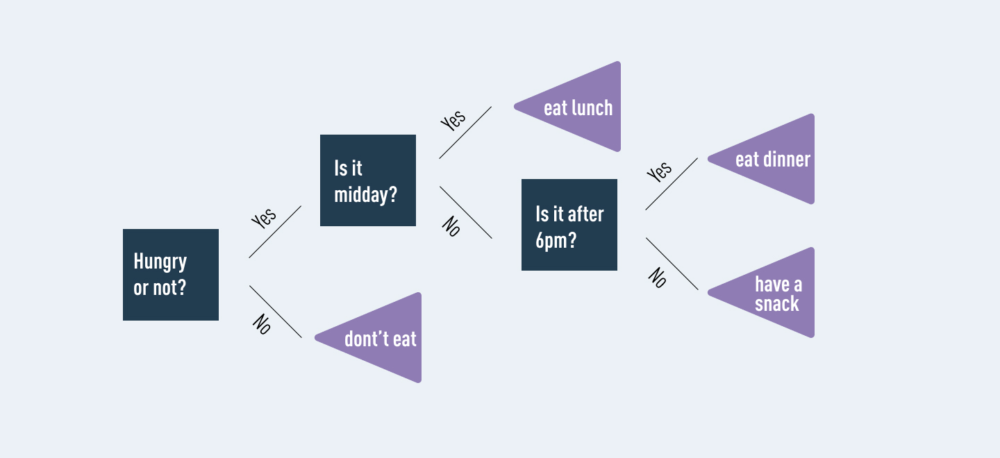

Lecture: Introduction to Random Forests
Contents
Lecture: Introduction to Random Forests#
This week we focus on the basics of data analysis and regression analysis.
Learning objectives week 2
Gain a basic understanding of using Pandas for data analysis.
Understand and know how you can perform a regression analysis.
Understand Random Forests and how they can be applied.
Know how to apply and train a Random Forest model within Python.
Know how to interpret your Random Forest model.
Linear regression#
Linear regression is used to identify the relationship between a dependent variable and one or more independent variables and is typically leveraged to make predictions about future outcomes. When there is only one independent variable and one dependent variable, it is known as simple linear regression. As the number of independent variables increases, it is referred to as multiple linear regression. For each type of linear regression, it seeks to plot a line of best fit, which is calculated through the method of least squares. However, unlike other regression models, this line is straight when plotted on a graph.
Logistic regression#
While linear regression is leveraged when dependent variables are continuous, logistical regression is selected when the dependent variable is categorical, meaning they have binary outputs, such as “true” and “false” or “yes” and “no.” While both regression models seek to understand relationships between data inputs, logistic regression is mainly used to solve binary classification problems, such as spam identification.
Random Forests#
Random Forest is a supervised machine learning algorithm that grows and combines multiple decision trees to create a forest. It can be used for both classification and regression problems.
A Random Forest model grows and combines multiple decision trees to create a forest. A decision tree is another type of algorithm used to classify data. In very simple terms, you can think of it like a flowchart that draws a clear pathway to a decision or outcome; it starts at a single point and then branches off into two or more directions, with each branch of the decision tree offering different possible outcomes.
Figure 1: An example of a decision tree.
Classification is an important and highly valuable branch of data science, and Random Forest is an algorithm that can be used for such classification tasks. Random Forest’s ensemble of trees outputs either the mode or mean of the individual trees. This method allows for more accurate and stable results by relying on a multitude of trees rather than a single decision tree. It’s kind of like the difference between a unicycle and a four-wheeler!
The logic behind the Random Forest model is that multiple uncorrelated models (the individual decision trees) perform much better as a group than they do alone. When using Random Forest for classification, each tree gives a classification or a “vote.” The forest chooses the classification with the majority of the “votes.” When using Random Forest for regression, the forest picks the average of the outputs of all trees.
The key here lies in the fact that there is low (or no) correlation between the individual models—that is, between the decision trees that make up the larger Random Forest model. While individual decision trees may produce errors, the majority of the group will be correct, thus moving the overall outcome in the right direction.
Are decision trees in Random Forest different from regular decision trees?#
It’s easy to get confused by a single decision tree and a decision forest. It seems like a decision forest would be a bunch of single decision trees, and it is… kind of. It’s a bunch of single decision trees but all of the trees are mixed together randomly instead of separate trees growing individually.
When using a regular decision tree, you would input a training dataset with features and labels and it will formulate some set of rules which it will use to make predictions. If you entered that same information into a Random Forest algorithm, it will randomly select observations and features to build several decision trees and then average the results.
For example, if you wanted to predict how much a bank’s customer will use a specific service a bank provides with a single decision tree, you would gather up how often they’ve used the bank in the past and what service they utilized during their visits. You would add some features that describe that customer’s decisions. The decision tree will generate rules to help predict whether the customer will use the bank’s service.
If you inputted that same dataset into a Random Forest, the algorithm would build multiple trees out of randomly selected customer visits and service usage. Then it would output the average results of each of those trees.
How are the trees in a Random Forest trained?#
Decision trees in an ensemble, like the trees within a Random Forest, are usually trained using the bagging method. The bagging method is a type of ensemble machine learning algorithm called Bootstrap Aggregation. An ensemble method combines predictions from multiple machine learning algorithms together to make more accurate predictions than an individual model. Random Forest is also an ensemble method.
Bootstrap randomly performs row sampling and feature sampling from the dataset to form sample datasets for every model. Aggregation reduces these sample datasets into summary statistics based on the observation and combines them. Bootstrap Aggregation can be used to reduce the variance of high variance algorithms such as decision trees.
Variance is an error resulting from sensitivity to small fluctuations in the dataset used for training. High variance will cause an algorithm to model irrelevant data, or noise, in the dataset instead of the intended outputs, called signal. This problem is called overfitting. An overfitted model will perform well in training, but won’t be able to distinguish the noise from the signal in an actual test.
Bagging is the application of the bootstrap method to a high variance machine learning algorithm.
What are the advantages of Random Forest?#
Random Forest is popular, and for good reason! It offers a variety of advantages, from accuracy and efficiency to relative ease of use. For data scientists wanting to use Random Forests in Python, scikit-learn offers a random forest classifier library that is simple and efficient.
The most convenient benefit of using random forest is its default ability to correct for decision trees’ habit of overfitting to their training set. Using the bagging method and random feature selection when executing this algorithm almost completely resolves the problem of overfitting which is great because overfitting leads to inaccurate outcomes. Plus, even if some data is missing, Random Forest usually maintains its accuracy.
Random forest is much more efficient than a single decision tree while performing analysis on a large database. On the other hand, Random Forest is less efficient than a neural network. A neural network, sometimes just called neural net, is a series of algorithms that reveal the underlying relationship within a dataset by mimicking the way that a human brain thinks.
Neural nets are more complicated than random forests but generate the best possible results by adapting to changing inputs. Unlike neural nets, Random Forest is set up in a way that allows for quick development with minimal hyper-parameters (high-level architectural guidelines), which makes for less set up time.
Since it takes less time and expertise to develop a Random Forest, this method often outweighs the neural network’s long-term efficiency for less experienced data scientists.
So, to summarize, the key benefits of using Random Forest are:
Ease of use.
Efficiency.
Accuracy.
Versatility – can be used for classification or regression.
What are the disadvantages of Random Forest?#
There aren’t many downsides to Random Forest, but every tool has its flaws. Because random forest uses many decision trees, it can require a lot of memory on larger projects. This can make it slower than some other, more efficient, algorithms.
Sometimes, because this is a decision tree-based method and decision trees often suffer from overfitting, this problem can affect the overall forest. This problem is usually prevented by Random Forest by default because it uses random subsets of the features and builds smaller trees with those subsets. This can slow down processing speed but increase accuracy.